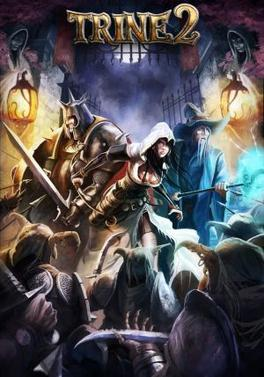

REGRESAR
TRINE 2

Trine 2 es un juego de plataformas y rompecabezas desarrollado y publicado por Frozenbyte . [5] Es la secuela de Trine y se lanzó para Microsoft Windows , OS X , PlayStation 3 y Xbox 360 en diciembre de 2011, [6] y posteriormente para Linux en marzo de 2012. Trine 2 permite que tres jugadores desempeñen los roles icónicos. de un mago, un ladrón y un caballero en un modo cooperativo simultáneo. [7] Se lanzóuna edición Director's Cut a través de la eShop de Wii U [8] el día del lanzamiento de la consola en todas las regiones excepto Australia y Japón. [9] El juego también se lanzó como título de lanzamiento para PlayStation 4 en Norteamérica y Europa en 2013. [3] [2] El 13 de febrero de 2019, se anunció quese lanzaría un puerto para Nintendo Switch en 18 de febrero de 2019. [10]
Trine 2 es un juego de plataformas y rompecabezas que requiere que el jugador use las habilidades de los tres personajes, el mago Amadeus, la ladrona Zoya y el caballero Poncio, para navegar por cada nivel del juego. Al igual que en el primer juego, el místico "Trine" ha unido a los tres personajes en una entidad común y, por lo tanto, el jugador controla solo un personaje que puede cambiar a los otros dos en cualquier momento. Cada uno de los personajes tiene habilidades únicas: Amadeus puede usar magia para agarrar ciertos objetos en el mundo del juego y crear cajas y tablas para moverse; Zoya puede golpear objetos con sus flechas y agarrarse a ciertas superficies; y Poncio es fuerte en el combate contra enemigos, puede derribar paredes y desviar proyectiles con su escudo. Es necesaria una combinación de estos elementos para completar cada etapa del mundo del juego.
Los personajes tienen medidores de vida individuales, y si el medidor de un personaje se agota, ese personaje no podrá usarse hasta que se alcance el siguiente punto de control. Si los tres personajes pierden su medidor de vida, el jugador debe comenzar de nuevo en el último punto de control. En todo el mundo del juego hay viales mágicos especiales, y por cada cincuenta de ellos recolectados, el jugador recibe un punto de habilidad, que puede usarse para ganar habilidades a través de un árbol de habilidades para cada personaje. Estos puntos de habilidad se pueden usar colectivamente para cada uno de los tres personajes y se pueden intercambiar entre ellos.
Trine 2 también admite hasta tres jugadores en modo cooperativo. En este modo, cada jugador controla uno de los tres personajes, pero todos deben ser únicos; Tres jugadores se verán obligados a jugar como Amadeus, Zoya y Poncio. Dos jugadores pueden cambiar de personaje siempre que ambos estén de acuerdo con el intercambio. Si un personaje muere, los otros jugadores pueden revivirlo en el siguiente punto de control. El árbol de habilidades se comparte entre todos los personajes, según la partida guardada del jugador anfitrión.